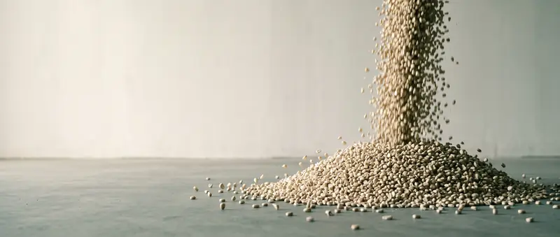
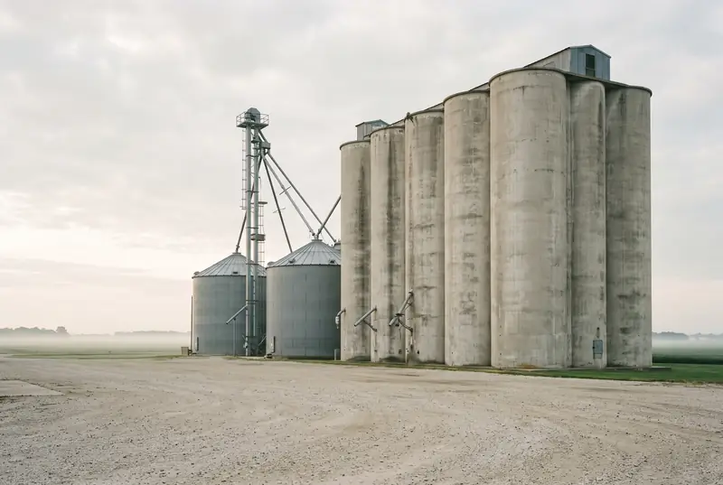
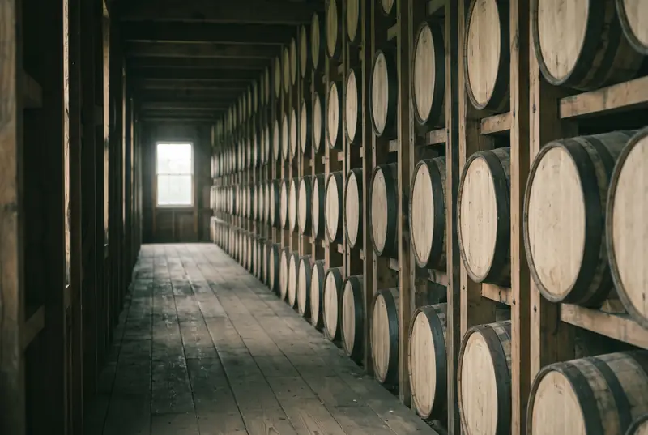
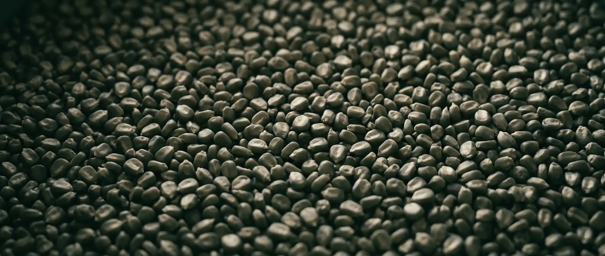

The forecasting method
Tested on public records: mycotoxin insurance claims for corn and wheat across the US, and earlier on crop yield. Each season is predicted from earlier seasons only, and the results include the years it lost. How we test
Harvest quality forecasts for US grain buyers, in development: DON, aflatoxin, test weight and falling number, facility by facility.

The weather that decides quality happens in a narrow window long before harvest. The tests happen at the pit, after the discount schedule is set.


Tested on public records: mycotoxin insurance claims for corn and wheat across the US, and earlier on crop yield. Each season is predicted from earlier seasons only, and the results include the years it lost. How we test
Public data stops at insurance claims: no national lab toxin levels, test weight or falling number by county. The facility panel is being assembled through data-licensing arrangements with facilities that test every day, and it will meet the same out-of-sample standard before any claim is published.
Grain buyers across the US, starting in the Ohio Valley and the Mid-South.

Blending strategy, discount schedules and bin space, set across hundreds of deliveries before the first truck arrives.

Corn bought on mycotoxin spec. Toxins concentrate in the stillage and distillers grains sold on as feed, so one bad purchase hurts two revenue streams.

No pilots are running yet. If you want to be one of the first, or want to argue with the methodology, tell us who you are and we'll reply by email.
Adrián Calderón Villegas, Founder